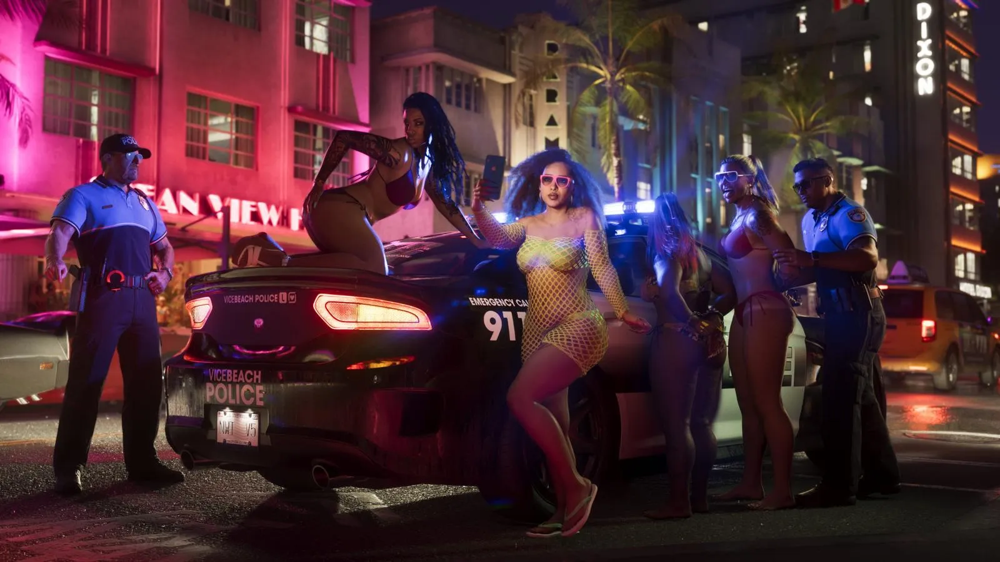

Магазины GTA 6: 24 Ammu-Nation, 122 бара и ещё 700 точек
Опубликовано:

- В Леониде больше 700 магазинов и заведений — от 24 оружейных Ammu-Nation до 118 уличных ларьков с едой.
- Еда и напитки — не декорация: еда поднимает максимум здоровья, напитки — выносливость и Focus.
- Наличными продавцы берут до $999 — дороже платят через BuckMe.
- Ограбить можно почти любой магазин: в «Прогрессе» 91 точка для налётов Stick Up.
Все магазины и услуги
Меню «Прогресс» считает каждую торговую точку Леониды — и их оказалось очень много. Вот полная статистика по данным PowerPyx:
| Заведение | Сколько | Зачем |
|---|---|---|
| Ammu-Nation | 24 | оружие, модификации, одежда; в магазинах «Expanded» — полный ассортимент |
| Pay ’n’ Spray | 19 | перекраска и ремонт; с главы 3 — продажа машин со стандартным трекером |
| Мод-шопы | 14 | тюнинг машин |
| Заправки | 57 | топливо и мелкий ремонт |
| Автомойки | 6 | |
| Гаражи | 12 | хранить машины; купить все — трофей Little Boxes |
| Ж/д станции | 25 | поездки на поезде |
| Паромные терминалы | 2 | |
| Магазины одежды | 67 | смена образа — главный способ сбросить приметы |
| Обувные | 17 | |
| Салоны красоты и парикмахерские | 18 | стрижку потом не вернуть бесплатно — каждый раз платить заново |
| Тату-салоны | 11 | |
| Электроника | 15 | |
| Круглосуточные магазины | 72 | еда, аптечки Zombix — и главная цель мелких ограблений |
| Фастфуд | 21 | |
| Кафе и еда навынос | 87 | |
| Винные магазины | 14 | |
| Бары | 122 | бильярд, знакомства, задания |
| Уличные ларьки с едой | 118 |
Что где покупать
- Оружие и одежда — в Ammu-Nation. В нём продаётся и одежда: в миссии Unwanted Attention Джейсон переодевается именно там. Оружие, купленное одним героем, получают оба, а модификации ставят каждому отдельно. Первым делом стоит взять глушитель.
- Аптечки — в круглосуточных. Zombix можно носить до 5 штук.
- Ремонт. Мелкие поломки чинят на заправке, серьёзные — в автосервисе или Pay ’n’ Spray. Машину можно и вызвать отремонтированной через Scooter Bros.
- Внешность. Новая одежда, шапка или очки — главный способ сбросить приметы после преступления. Купленная одежда остаётся навсегда, а вот стрижку придётся оплачивать каждый раз.
- Еда и напитки. Еда временно поднимает максимум здоровья, напитки — выносливость и Focus. Переедание прибавляет жир, но, по наблюдению Inven Global, при регулярных тренировках почти незаметно.
Как платить
Наличными продавцы принимают до $999, покупки от $1 000 оплачиваются через приложение BuckMe. Если наличных с собой нет, деньги тоже списываются с BuckMe. Скидки дают уровни сбережений: −20% на такси RydeMe (уровень BuckeDry), −20% на гаражи (BuckMe Gold), −10% на ливреи (BuckMe Premium). Подробнее — Как заработать деньги в GTA 6: лучшие способы по главам.
Какие можно ограбить
| Что | Сколько | Как |
|---|---|---|
| Мелкие магазины (Stick Up) | 91 точка | прицелиться в продавца и забрать кассу; для 100% — 50 разных |
| Ювелирные и ломбарды (Smash ’n’ Grab) | 35 | витрины и сейф в подсобке; с главы 3 |
| Микрозаймы | 7 | касса и сейф; после Credit Check |
| Банки | 22 | после Credit Check; в больших — хранилище |
Три магазина подряд с напарником без сброса розыска — трофей Retail Therapy, 50 ограблений вдвоём — чит-фильтр Faded Glory.
- Баров в Леониде (122) больше, чем заправок (57) и Ammu-Nation (24), вместе взятых.
- Мест, где можно поесть, — почти 300: 118 уличных ларьков, 87 кафе, 72 круглосуточных магазина и 21 фастфуд.
Частые вопросы
Сколько Ammu-Nation в GTA 6?
24.
Где переодеться в GTA 6?
В любом из 67 магазинов одежды, в Ammu-Nation или из запасного наряда в багажнике машины.
Сколько наличных берут продавцы?
До $999. Дороже — только через BuckMe.
Источники: PowerPyx, «GTA 6 Collectible Guide – Progress Database», 19.11.2026; PowerPyx, «Buck Me», «Get The Chop», «Unwanted Attention», 19.11.2026; GTABase, «GTA 6 100% Completion Guide», 19.11.2026; Inven Global, 19.11.2026.
Каждый день — новости, фишки и секреты GTA 6 за 30 секунд. Подписывайтесь:
YouTubeInstagramTikTok